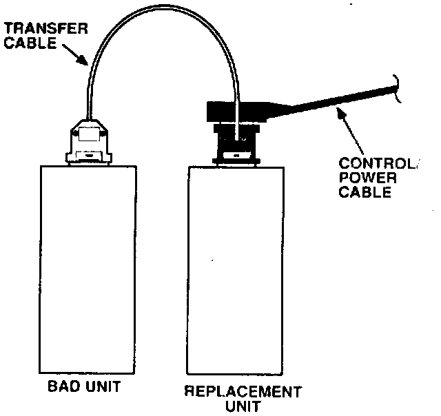

Telephone - Transferring Information to Replacement
April 8, 1991BULLETIN NO.
91-020
YEAR
ALL
MODEL
NSX & LEGEND
VIN APPLICATION
ALL with Optional Cellular Telephone
Transferring Information to a Replacement Telephone
A cellular telephone stores important operating information in its memory. This information, such as the Electronic Serial Number, is unique to each telephone. Some of it is transmitted to the cellular carrier whenever the telephone is on so the carrier can identify the phone and its location. If a cellular telephone transceiver unit must be replaced, this information can be electronically transferred from the bad transceiver to the replacement. This eliminates the need to manually reprogram the unit and notify the cellular carrier of the change.
PROCEDURE
Use the Data Transfer Cable (T/N 07MAZ-001010A) to transfer the Number Assignment Module (NAM) programming, the customer's programming, and the Electronic Serial Number (ESN) from the defective transceiver to the replacement.
1. Make sure the ignition and telephone are OFF to prevent damage.

2. Disconnect the control/power cable from the transceiver. Attach the Data Transfer Cable to the transceivers exactly as shown. Attach the control/power cable to the Data Transfer Cable.
NOTE:
Verify that the Data Transfer and control/power cables are connected correctly. If the cables are reversed, the programming and serial number information will be lost.
3. Turn the ignition to Accessory and turn on the telephone.
4. Information will begin scrolling across the telephone display. Press the # key to stop the scroll.
5. Enter 66 # to begin the data transfer. You will see "66" in the display. When the transfer finishes. you will see a "PASS" or "FAIL" message. If it displays "PASS," go to step 7.
6. If the transfer fails, compare the Fail Code in the display to the information below to determine the problem:
FAIL - The cable is not connected properly or a problem in the bad transceiver is keeping the data from transferring, Check the cable connections and correct any problems. Try transferring the data again. If it passes, go to step 7. If it fails, manually program the customer's information into the replacement unit and inform the cellular carrier of the new Electronic Serial Number.
FAIL 2 - The Electronic Serial Number in the bad transceiver has been destroyed or will not transfer. Program the customer's information into the replacement unit, and inform the cellular carrier of the new ESN.
FAIL 12 - The replacement transceiver is bad. Use a new transceiver and repeat the data transfer.
7. Turn off the telephone and the ignition.
8. Remove the Data Transfer Cable and connect the control/power cable to the transceiver.
9. Cross out the ESN that is on the end label. Write the new ESN on a label and stick it on the transceiver.
TOOL INFORMATION
Cellular Telephone Data Transfer Cable:
T/N 07MAZ-001010A